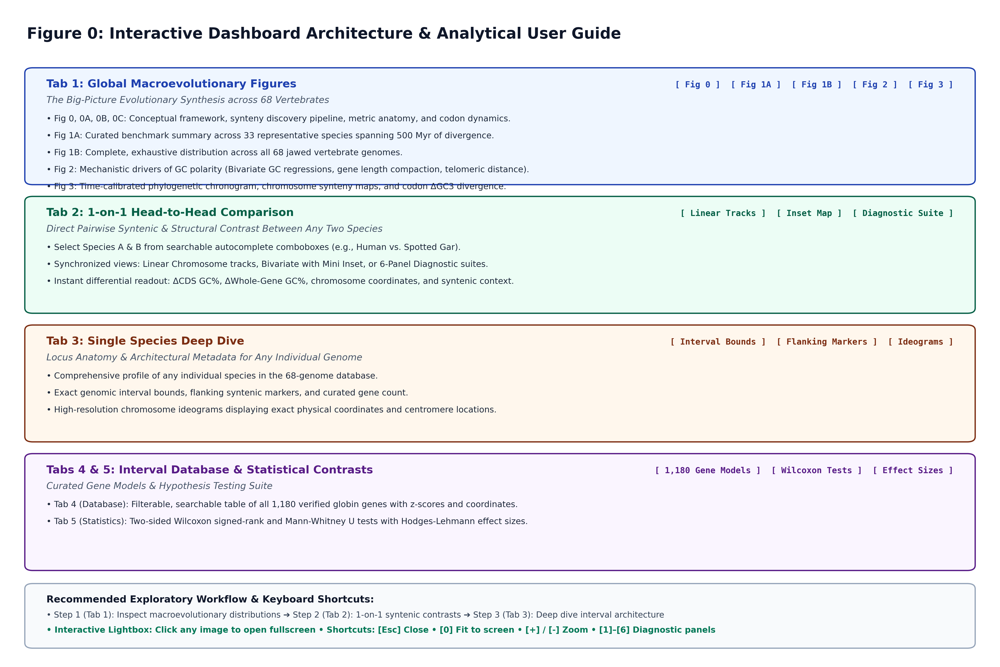
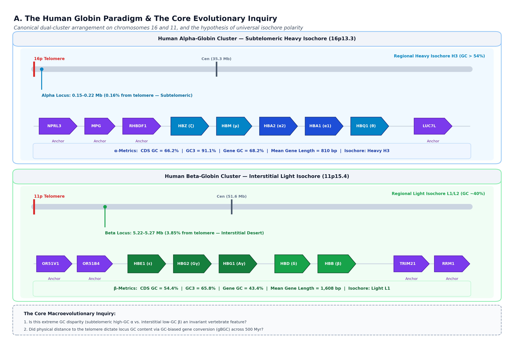
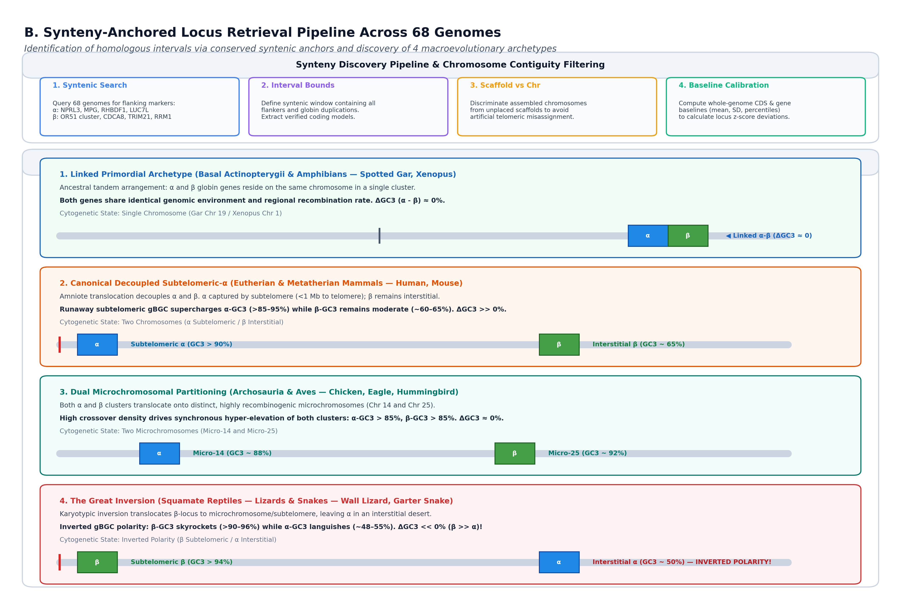
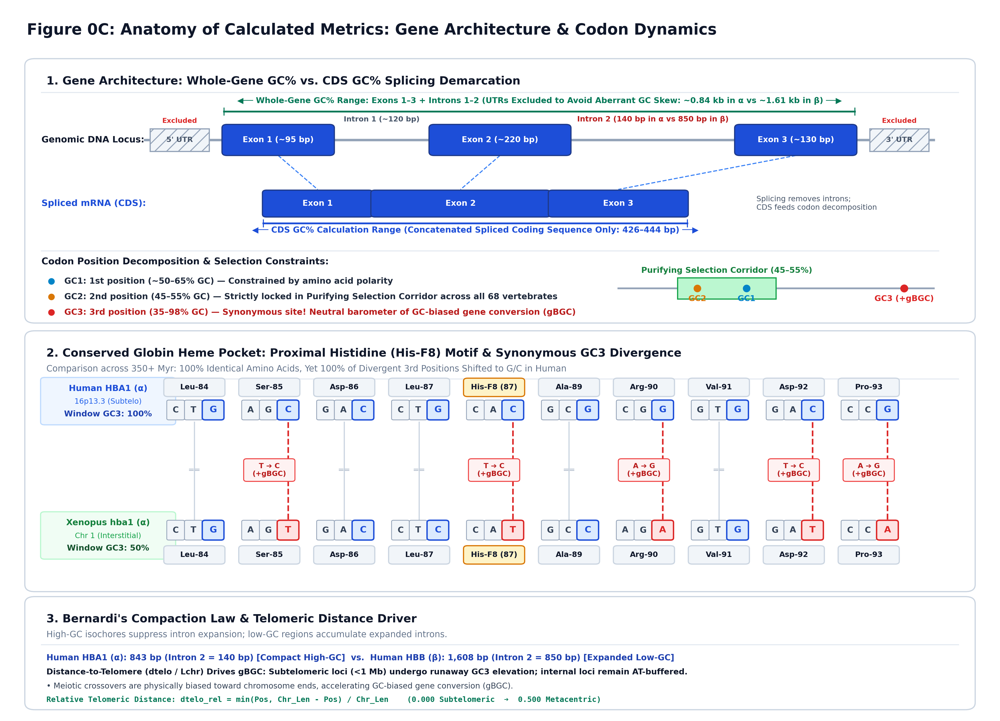

<!DOCTYPE html>
<html lang="en">
<head>
    <meta charset="UTF-8">
    <meta name="viewport" content="width=device-width, initial-scale=1.0">
    <title>Overview &amp; Methodology Guide — Vertebrate Globin Genomics Atlas</title>
    <style>
        :root {
            --bg: #090d16;
            --surface: #0f172a;
            --surface-card: #1e293b;
            --surface-elevated: #27354f;
            --border: #334155;
            --border-highlight: #475569;
            --text: #f8fafc;
            --text-muted: #94a3b8;
            --text-dim: #64748b;
            --primary: #0284c7;
            --primary-light: #38bdf8;
            --primary-dark: #0369a1;
            --accent-gc: #22c55e;
            --accent-gc-light: #86efac;
            --accent-at: #f97316;
            --accent-at-light: #fdba74;
            --accent-f8: #eab308;
            --sidebar-w: 300px;
        }

        * {
            box-sizing: border-box;
            margin: 0;
            padding: 0;
        }

        body {
            font-family: -apple-system, BlinkMacSystemFont, "Segoe UI", Roboto, Helvetica, Arial, sans-serif;
            background: var(--bg);
            color: var(--text);
            line-height: 1.6;
            min-height: 100vh;
            display: flex;
        }

        /* SIDEBAR NAVIGATOR */
        .sidebar {
            width: var(--sidebar-w);
            background: var(--surface);
            border-right: 1px solid var(--border);
            height: 100vh;
            position: fixed;
            top: 0;
            left: 0;
            overflow-y: auto;
            display: flex;
            flex-direction: column;
            z-index: 100;
        }

        .sidebar-brand {
            padding: 1.25rem 1.15rem;
            border-bottom: 1px solid var(--border);
            background: rgba(15, 23, 42, 0.95);
        }

        .sidebar-brand h2 {
            font-size: 1.05rem;
            font-weight: 700;
            color: var(--primary-light);
            letter-spacing: -0.2px;
            display: flex;
            align-items: center;
            gap: 0.5rem;
        }

        .sidebar-brand p {
            font-size: 0.76rem;
            color: var(--text-muted);
            margin-top: 0.25rem;
        }

        .sidebar-actions {
            padding: 0.75rem 1rem;
            border-bottom: 1px solid var(--border);
            display: flex;
            flex-direction: column;
            gap: 0.5rem;
        }

        .btn-dash {
            display: inline-flex;
            align-items: center;
            justify-content: center;
            gap: 0.45rem;
            background: rgba(56, 189, 248, 0.12);
            border: 1px solid rgba(56, 189, 248, 0.35);
            color: var(--primary-light);
            padding: 0.45rem 0.8rem;
            border-radius: 6px;
            font-size: 0.82rem;
            font-weight: 600;
            text-decoration: none;
            transition: all 0.2s ease;
        }

        .btn-dash:hover {
            background: rgba(56, 189, 248, 0.22);
            border-color: var(--primary-light);
            transform: translateX(2px);
        }

        .view-mode-bar {
            display: flex;
            background: #090d16;
            padding: 0.2rem;
            border-radius: 6px;
            border: 1px solid var(--border);
        }

        .view-mode-btn {
            flex: 1;
            background: transparent;
            border: none;
            color: var(--text-muted);
            font-size: 0.75rem;
            font-weight: 600;
            padding: 0.35rem;
            border-radius: 4px;
            cursor: pointer;
            transition: all 0.15s;
        }

        .view-mode-btn.active {
            background: var(--surface-card);
            color: var(--primary-light);
            box-shadow: 0 1px 3px rgba(0,0,0,0.3);
        }

        .nav-list {
            list-style: none;
            padding: 0.75rem 0.65rem;
            display: flex;
            flex-direction: column;
            gap: 0.35rem;
            flex: 1;
        }

        .nav-item-btn {
            width: 100%;
            display: flex;
            align-items: flex-start;
            gap: 0.65rem;
            padding: 0.65rem 0.75rem;
            background: transparent;
            border: 1px solid transparent;
            border-radius: 6px;
            color: var(--text);
            text-align: left;
            cursor: pointer;
            transition: all 0.2s;
            text-decoration: none;
        }

        .nav-item-btn:hover {
            background: rgba(255, 255, 255, 0.04);
            border-color: var(--border);
        }

        .nav-item-btn.active {
            background: rgba(2, 132, 199, 0.18);
            border-color: rgba(56, 189, 248, 0.4);
            color: #ffffff;
        }

        .nav-badge {
            background: var(--surface-card);
            color: var(--primary-light);
            font-size: 0.7rem;
            font-weight: 700;
            padding: 0.15rem 0.45rem;
            border-radius: 4px;
            border: 1px solid var(--border);
            flex-shrink: 0;
            margin-top: 0.1rem;
        }

        .nav-item-btn.active .nav-badge {
            background: var(--primary);
            color: white;
            border-color: var(--primary-light);
        }

        .nav-title-box {
            display: flex;
            flex-direction: column;
        }

        .nav-main-title {
            font-size: 0.84rem;
            font-weight: 600;
            line-height: 1.25;
        }

        .nav-sub-desc {
            font-size: 0.72rem;
            color: var(--text-muted);
            margin-top: 0.15rem;
        }

        .sidebar-footer {
            padding: 0.85rem 1rem;
            border-top: 1px solid var(--border);
            font-size: 0.74rem;
            color: var(--text-dim);
            background: rgba(15, 23, 42, 0.9);
        }

        /* MAIN VIEWPORT */
        .main-content {
            margin-left: var(--sidebar-w);
            flex: 1;
            padding: 2rem 2.5rem 5rem 2.5rem;
            max-width: 1550px;
        }

        .header-banner {
            background: linear-gradient(135deg, rgba(2, 132, 199, 0.15), rgba(15, 23, 42, 0.6));
            border: 1px solid var(--border);
            border-radius: 12px;
            padding: 1.5rem 1.8rem;
            margin-bottom: 2rem;
            position: relative;
        }

        .header-banner h1 {
            font-size: 1.7rem;
            font-weight: 800;
            color: #ffffff;
            letter-spacing: -0.3px;
        }

        .header-banner p {
            color: var(--text-muted);
            font-size: 0.94rem;
            margin-top: 0.35rem;
            max-width: 1000px;
        }

        .tag-row {
            display: flex;
            flex-wrap: wrap;
            gap: 0.5rem;
            margin-top: 0.85rem;
        }

        .tag {
            background: var(--surface-card);
            border: 1px solid var(--border);
            color: var(--text-muted);
            font-size: 0.75rem;
            font-weight: 600;
            padding: 0.2rem 0.6rem;
            border-radius: 4px;
        }

        .tag.blue { color: var(--primary-light); border-color: rgba(56, 189, 248, 0.3); background: rgba(56, 189, 248, 0.08); }
        .tag.green { color: var(--accent-gc-light); border-color: rgba(34, 197, 94, 0.3); background: rgba(34, 197, 94, 0.08); }
        .tag.amber { color: #fde047; border-color: rgba(234, 179, 8, 0.3); background: rgba(234, 179, 8, 0.08); }

        /* STEP SLIDE DECK CONTROLS */
        .step-controller {
            display: flex;
            align-items: center;
            justify-content: space-between;
            background: var(--surface);
            border: 1px solid var(--border);
            border-radius: 8px;
            padding: 0.6rem 1rem;
            margin-bottom: 1.75rem;
        }

        .step-info {
            font-size: 0.85rem;
            font-weight: 700;
            color: var(--text);
            display: flex;
            align-items: center;
            gap: 0.5rem;
        }

        .step-btns {
            display: flex;
            gap: 0.45rem;
        }

        .btn-ctrl {
            background: var(--surface-card);
            border: 1px solid var(--border);
            color: var(--text);
            font-size: 0.82rem;
            font-weight: 600;
            padding: 0.4rem 0.85rem;
            border-radius: 6px;
            cursor: pointer;
            transition: all 0.15s;
            display: inline-flex;
            align-items: center;
            gap: 0.35rem;
        }

        .btn-ctrl:hover:not(:disabled) {
            background: var(--surface-elevated);
            border-color: var(--primary-light);
            color: var(--primary-light);
        }

        .btn-ctrl:disabled {
            opacity: 0.4;
            cursor: not-allowed;
        }

        /* PANEL CONTAINERS */
        .panel-section {
            display: none;
            background: var(--surface);
            border: 1px solid var(--border);
            border-radius: 12px;
            padding: 1.8rem;
            margin-bottom: 2.5rem;
            box-shadow: 0 10px 30px rgba(0,0,0,0.4);
            animation: fadeIn 0.25s ease-in-out;
        }

        .panel-section.active-slide {
            display: block;
        }

        body.mode-continuous .panel-section {
            display: block !important;
            animation: none;
        }

        @keyframes fadeIn {
            from { opacity: 0; transform: translateY(6px); }
            to { opacity: 1; transform: translateY(0); }
        }

        .panel-header {
            margin-bottom: 1.25rem;
            border-bottom: 1px solid var(--border);
            padding-bottom: 1rem;
            display: flex;
            justify-content: space-between;
            align-items: flex-start;
            flex-wrap: wrap;
            gap: 1rem;
        }

        .panel-header-left {
            max-width: 950px;
        }

        .panel-breadcrumb {
            font-size: 0.74rem;
            font-weight: 700;
            color: var(--primary-light);
            text-transform: uppercase;
            letter-spacing: 0.5px;
            margin-bottom: 0.3rem;
        }

        .panel-title {
            font-size: 1.45rem;
            font-weight: 800;
            color: #ffffff;
            letter-spacing: -0.2px;
        }

        .panel-desc {
            font-size: 0.9rem;
            color: var(--text-muted);
            margin-top: 0.35rem;
            line-height: 1.5;
        }

        .panel-dl-group {
            display: flex;
            gap: 0.45rem;
            flex-shrink: 0;
        }

        .dl-btn {
            background: var(--surface-card);
            border: 1px solid var(--border);
            color: var(--text-muted);
            font-size: 0.78rem;
            font-weight: 600;
            padding: 0.35rem 0.7rem;
            border-radius: 6px;
            text-decoration: none;
            display: inline-flex;
            align-items: center;
            gap: 0.35rem;
            transition: all 0.15s;
        }

        .dl-btn:hover {
            background: var(--surface-elevated);
            color: var(--text);
            border-color: var(--border-highlight);
        }

        .dl-btn.pdf {
            color: #f87171;
            border-color: rgba(248, 113, 113, 0.3);
            background: rgba(248, 113, 113, 0.08);
        }
        .dl-btn.pdf:hover {
            background: rgba(248, 113, 113, 0.18);
        }

        /* IMAGE DISPLAY BOX */
        .img-display-box {
            background: #ffffff;
            border-radius: 8px;
            border: 1px solid var(--border-highlight);
            overflow: hidden;
            margin-bottom: 1.5rem;
            position: relative;
            box-shadow: 0 4px 20px rgba(0,0,0,0.5);
            cursor: zoom-in;
        }

        .img-display-box img {
            width: 100%;
            height: auto;
            display: block;
        }

        .img-overlay-bar {
            position: absolute;
            bottom: 0;
            left: 0;
            right: 0;
            background: linear-gradient(to top, rgba(15, 23, 42, 0.92), rgba(15, 23, 42, 0.4) 75%, transparent);
            padding: 0.6rem 1rem;
            display: flex;
            justify-content: space-between;
            align-items: center;
            color: white;
            font-size: 0.8rem;
            backdrop-filter: blur(4px);
        }

        /* NARRATIVE CARDS */
        .narrative-grid {
            display: grid;
            grid-template-columns: repeat(auto-fit, minmax(360px, 1fr));
            gap: 1.25rem;
            margin-top: 1.5rem;
        }

        .narrative-card {
            background: var(--surface-card);
            border: 1px solid var(--border);
            border-radius: 8px;
            padding: 1.25rem;
        }

        .narrative-card h4 {
            font-size: 0.98rem;
            font-weight: 700;
            color: var(--primary-light);
            margin-bottom: 0.65rem;
            display: flex;
            align-items: center;
            gap: 0.4rem;
        }

        .narrative-card p {
            font-size: 0.88rem;
            color: #cbd5e1;
            line-height: 1.55;
            margin-bottom: 0.65rem;
        }

        .narrative-card ul {
            padding-left: 1.2rem;
            font-size: 0.86rem;
            color: #cbd5e1;
        }

        .narrative-card li {
            margin-bottom: 0.45rem;
            line-height: 1.45;
        }

        .narrative-card li b {
            color: #ffffff;
        }

        /* INTERACTIVE TOOL STYLING */
        .interactive-tool-box {
            background: linear-gradient(180deg, #131d31, #0f172a);
            border: 1px solid rgba(56, 189, 248, 0.35);
            border-radius: 12px;
            padding: 1.5rem;
            margin-top: 1rem;
            box-shadow: 0 8px 30px rgba(2, 132, 199, 0.15);
        }

        .tool-header {
            display: flex;
            justify-content: space-between;
            align-items: flex-start;
            flex-wrap: wrap;
            gap: 1rem;
            margin-bottom: 1.25rem;
            border-bottom: 1px solid var(--border);
            padding-bottom: 1rem;
        }

        .tool-header-left h3 {
            font-size: 1.25rem;
            font-weight: 800;
            color: #ffffff;
            display: flex;
            align-items: center;
            gap: 0.5rem;
        }

        .tool-header-left p {
            font-size: 0.86rem;
            color: var(--text-muted);
            margin-top: 0.25rem;
            max-width: 900px;
        }

        .filter-btn-group {
            display: flex;
            gap: 0.35rem;
            flex-wrap: wrap;
        }

        .tool-filter-btn {
            background: var(--surface-card);
            border: 1px solid var(--border);
            color: var(--text-muted);
            font-size: 0.76rem;
            font-weight: 600;
            padding: 0.32rem 0.65rem;
            border-radius: 6px;
            cursor: pointer;
            transition: all 0.15s;
        }

        .tool-filter-btn:hover {
            color: var(--text);
            border-color: var(--primary-light);
        }

        .tool-filter-btn.active {
            background: var(--primary);
            color: white;
            border-color: var(--primary-light);
        }

        .stats-summary-bar {
            display: grid;
            grid-template-columns: repeat(auto-fit, minmax(200px, 1fr));
            gap: 0.75rem;
            margin-bottom: 1.5rem;
        }

        .stat-tile {
            background: var(--surface-card);
            border: 1px solid var(--border);
            border-radius: 8px;
            padding: 0.75rem 1rem;
        }

        .stat-tile-label {
            font-size: 0.72rem;
            font-weight: 700;
            color: var(--text-muted);
            text-transform: uppercase;
            letter-spacing: 0.5px;
        }

        .stat-tile-val {
            font-size: 1.25rem;
            font-weight: 800;
            color: #ffffff;
            margin-top: 0.15rem;
        }

        .stat-tile-sub {
            font-size: 0.74rem;
            color: var(--text-dim);
            margin-top: 0.1rem;
        }

        .codon-tracks-wrapper {
            background: #090d16;
            border: 1px solid var(--border);
            border-radius: 10px;
            padding: 1.25rem 1rem;
            overflow-x: auto;
            margin-bottom: 1.25rem;
        }

        .codon-grid {
            display: grid;
            grid-template-columns: 160px repeat(10, minmax(90px, 1fr));
            gap: 0.5rem;
            min-width: 1060px;
            align-items: center;
        }

        .track-meta-col {
            display: flex;
            flex-direction: column;
            justify-content: center;
            padding: 0.5rem;
            border-radius: 6px;
        }

        .track-meta-col.human {
            background: rgba(2, 132, 199, 0.15);
            border-left: 3px solid var(--primary-light);
        }

        .track-meta-col.xenopus {
            background: rgba(34, 197, 94, 0.15);
            border-left: 3px solid var(--accent-gc);
        }

        .track-meta-name {
            font-size: 0.85rem;
            font-weight: 800;
            color: #ffffff;
        }

        .track-meta-loc {
            font-size: 0.72rem;
            color: var(--text-muted);
            margin-top: 0.1rem;
        }

        .track-meta-gc3 {
            font-size: 0.76rem;
            font-weight: 700;
            margin-top: 0.25rem;
        }

        .track-meta-col.human .track-meta-gc3 { color: var(--primary-light); }
        .track-meta-col.xenopus .track-meta-gc3 { color: var(--accent-gc-light); }

        .codon-col-header {
            text-align: center;
            padding-bottom: 0.35rem;
        }

        .aa-badge {
            display: inline-block;
            background: var(--surface-card);
            border: 1px solid var(--border-highlight);
            color: #ffffff;
            font-weight: 800;
            font-size: 0.78rem;
            padding: 0.2rem 0.5rem;
            border-radius: 6px;
            letter-spacing: 0.5px;
        }

        .aa-badge.f8 {
            background: #ca8a04;
            color: #fef08a;
            border-color: #facc15;
            box-shadow: 0 0 10px rgba(250, 204, 21, 0.4);
        }

        .aa-sub {
            font-size: 0.68rem;
            color: var(--text-dim);
            margin-top: 0.2rem;
        }

        .codon-card {
            background: var(--surface-card);
            border: 1px solid var(--border);
            border-radius: 6px;
            padding: 0.4rem;
            text-align: center;
            cursor: pointer;
            transition: all 0.2s ease;
            position: relative;
        }

        .codon-card:hover, .codon-card.selected {
            transform: translateY(-2px);
            border-color: var(--primary-light);
            background: var(--surface-elevated);
            box-shadow: 0 4px 12px rgba(2, 132, 199, 0.3);
        }

        .triplet-box {
            display: flex;
            justify-content: center;
            gap: 2px;
            margin: 0.25rem 0;
        }

        .nuc-pill {
            flex: 1;
            padding: 0.25rem 0.15rem;
            font-family: ui-monospace, SFMono-Regular, Menlo, Monaco, Consolas, monospace;
            font-size: 0.85rem;
            font-weight: 800;
            border-radius: 4px;
            background: rgba(255, 255, 255, 0.05);
            border: 1px solid rgba(255, 255, 255, 0.1);
            color: #e2e8f0;
        }

        .nuc-pill.pos12 {
            color: #94a3b8;
        }

        .nuc-pill.gc3-high {
            background: rgba(2, 132, 199, 0.35);
            border-color: var(--primary-light);
            color: #38bdf8;
            font-weight: 900;
            box-shadow: 0 0 6px rgba(56, 189, 248, 0.35);
        }

        .nuc-pill.gc3-low {
            background: rgba(249, 115, 22, 0.3);
            border-color: var(--accent-at-light);
            color: #fdba74;
            font-weight: 900;
        }

        .shift-connector {
            text-align: center;
            padding: 0.35rem 0;
            font-size: 0.72rem;
            font-weight: 700;
            display: flex;
            flex-direction: column;
            align-items: center;
            justify-content: center;
            min-height: 48px;
        }

        .shift-badge {
            background: rgba(239, 68, 68, 0.15);
            border: 1px dashed rgba(239, 68, 68, 0.5);
            color: #fca5a5;
            padding: 0.15rem 0.35rem;
            border-radius: 4px;
            font-size: 0.68rem;
            line-height: 1.2;
            display: inline-block;
        }

        .shift-badge.same {
            background: transparent;
            border: none;
            color: var(--text-dim);
            font-weight: normal;
        }

        .codon-inspector-box {
            background: var(--surface-card);
            border: 1px solid var(--border);
            border-radius: 8px;
            padding: 1.25rem;
            display: flex;
            flex-direction: column;
            gap: 0.65rem;
            animation: fadeIn 0.2s ease;
        }

        .inspector-title-row {
            display: flex;
            justify-content: space-between;
            align-items: center;
            flex-wrap: wrap;
            gap: 0.5rem;
            border-bottom: 1px solid var(--border);
            padding-bottom: 0.65rem;
        }

        .inspector-title {
            font-size: 1.05rem;
            font-weight: 800;
            color: var(--primary-light);
        }

        .inspector-badge {
            background: rgba(56, 189, 248, 0.15);
            color: var(--primary-light);
            border: 1px solid rgba(56, 189, 248, 0.3);
            font-size: 0.74rem;
            font-weight: 700;
            padding: 0.2rem 0.5rem;
            border-radius: 4px;
        }

        .inspector-grid {
            display: grid;
            grid-template-columns: 1fr 1fr;
            gap: 1rem;
        }

        .inspector-subcard {
            background: #090d16;
            border: 1px solid var(--border);
            border-radius: 6px;
            padding: 0.75rem;
        }

        .inspector-subcard h5 {
            font-size: 0.78rem;
            font-weight: 700;
            color: var(--text-muted);
            text-transform: uppercase;
            margin-bottom: 0.4rem;
        }

        .inspector-subcard p {
            font-size: 0.85rem;
            color: #cbd5e1;
            line-height: 1.45;
        }

        /* LIGHTBOX MODAL */
        .lightbox-modal {
            display: none;
            position: fixed;
            top: 0;
            left: 0;
            width: 100vw;
            height: 100vh;
            background: rgba(5, 8, 15, 0.94);
            backdrop-filter: blur(8px);
            z-index: 1000;
            flex-direction: column;
        }

        .lightbox-modal.active {
            display: flex;
        }

        .lightbox-header {
            padding: 0.75rem 1.5rem;
            background: rgba(15, 23, 42, 0.9);
            border-bottom: 1px solid var(--border);
            display: flex;
            justify-content: space-between;
            align-items: center;
        }

        .lightbox-title {
            font-size: 0.95rem;
            font-weight: 700;
            color: var(--primary-light);
        }

        .lightbox-close {
            background: var(--surface-card);
            border: 1px solid var(--border);
            color: white;
            font-size: 1.1rem;
            width: 32px;
            height: 32px;
            border-radius: 6px;
            cursor: pointer;
            display: flex;
            align-items: center;
            justify-content: center;
        }

        .lightbox-body {
            flex: 1;
            overflow: auto;
            display: flex;
            align-items: center;
            justify-content: center;
            padding: 1.5rem;
        }

        .lightbox-body img {
            max-width: 95%;
            max-height: 90vh;
            border-radius: 6px;
            box-shadow: 0 10px 40px rgba(0,0,0,0.8);
            border: 1px solid var(--border-highlight);
            background: white;
        }

        @media (max-width: 1024px) {
            .sidebar {
                position: relative;
                width: 100%;
                height: auto;
            }
            body {
                flex-direction: column;
            }
            .main-content {
                margin-left: 0;
                padding: 1.25rem;
            }
            .inspector-grid {
                grid-template-columns: 1fr;
            }
        }
    </style>
</head>
<body>

    <!-- SIDEBAR NAVIGATOR -->
    <aside class="sidebar">
        <div class="sidebar-brand">
            <h2>
                <svg width="18" height="18" viewBox="0 0 24 24" fill="none" stroke="currentColor" stroke-width="2.2" stroke-linecap="round" stroke-linejoin="round"><circle cx="12" cy="12" r="10"></circle><path d="M12 2a14.5 14.5 0 0 0 0 20 14.5 14.5 0 0 0 0-20"></path><path d="M2 12h20"></path></svg>
                Globin Genomics Atlas
            </h2>
            <p>Overview, Methodology &amp; User Guide</p>
        </div>

        <div class="sidebar-actions">
            <a href="dashboard.html" class="btn-dash">
                <svg width="14" height="14" viewBox="0 0 24 24" fill="none" stroke="currentColor" stroke-width="2" stroke-linecap="round" stroke-linejoin="round"><line x1="19" y1="12" x2="5" y2="12"></line><polyline points="12 19 5 12 12 5"></polyline></svg>
                Return to Main Dashboard
            </a>
            <div class="view-mode-bar">
                <button class="view-mode-btn active" id="btn-mode-slide" onclick="setViewMode('slide')">Slide Deck Mode</button>
                <button class="view-mode-btn" id="btn-mode-scroll" onclick="setViewMode('scroll')">Continuous View</button>
            </div>
        </div>

        <ul class="nav-list" id="sidebar-nav-list">
            <li>
                <button class="nav-item-btn active" onclick="goToSlide(0)">
                    <span class="nav-badge">Fig 0</span>
                    <div class="nav-title-box">
                        <span class="nav-main-title">Dashboard Architecture</span>
                        <span class="nav-sub-desc">Analytical User Guide &amp; Modules</span>
                    </div>
                </button>
            </li>
            <li>
                <button class="nav-item-btn" onclick="goToSlide(1)">
                    <span class="nav-badge">Fig 0A</span>
                    <div class="nav-title-box">
                        <span class="nav-main-title">Human Globin Paradigm</span>
                        <span class="nav-sub-desc">Chr 16p vs 11p &amp; Inquiries</span>
                    </div>
                </button>
            </li>
            <li>
                <button class="nav-item-btn" onclick="goToSlide(2)">
                    <span class="nav-badge">Fig 0B</span>
                    <div class="nav-title-box">
                        <span class="nav-main-title">Syntenic Discovery Pipeline</span>
                        <span class="nav-sub-desc">HMMER Scans &amp; 4 Archetypes</span>
                    </div>
                </button>
            </li>
            <li>
                <button class="nav-item-btn" onclick="goToSlide(3)">
                    <span class="nav-badge">Fig 0C</span>
                    <div class="nav-title-box">
                        <span class="nav-main-title">Metrics &amp; Codon Dynamics</span>
                        <span class="nav-sub-desc">Splicing Ranges &amp; Purifying Corridor</span>
                    </div>
                </button>
            </li>
            <li>
                <button class="nav-item-btn" onclick="goToSlide(4)">
                    <span class="nav-badge" style="background: rgba(234, 179, 8, 0.2); color: #facc15; border-color: rgba(234, 179, 8, 0.4);">Tool</span>
                    <div class="nav-title-box">
                        <span class="nav-main-title">Interactive Codon Explorer</span>
                        <span class="nav-sub-desc">Live His-F8 Heme Pocket Zoom</span>
                    </div>
                </button>
            </li>
        </ul>

        <div class="sidebar-footer">
            <div>68 Vertebrate Genomes • 500 Myr Evolution</div>
            <div style="margin-top: 0.2rem; color: #475569;">Vertebrate Globin Genomics Explorer</div>
        </div>
    </aside>

    <!-- MAIN VIEWPORT -->
    <main class="main-content">

        <!-- HEADER BANNER -->
        <div class="header-banner">
            <h1>Conceptual Framework, Methodology &amp; Analytical Guide</h1>
            <p>A comprehensive walkthrough of the evolutionary mechanisms, synteny-anchored retrieval pipeline, biophysical metrics, and interactive exploration tools across 68 jawed vertebrate genomes.</p>
            <div class="tag-row">
                <span class="tag blue">Isochore Evolution</span>
                <span class="tag green">GC-Biased Gene Conversion (gBGC)</span>
                <span class="tag amber">Purifying Selection Corridor (45–55%)</span>
                <span class="tag">Syntenic Gene Orthology</span>
                <span class="tag blue">His-F8 Conserved Heme Pocket</span>
            </div>
        </div>

        <!-- STEP SLIDE DECK CONTROLS -->
        <div class="step-controller" id="step-ctrl-bar">
            <div class="step-info">
                <span id="step-indicator-text" style="color: var(--primary-light);">Slide 1 of 5</span>
                <span style="color: var(--border-highlight);">•</span>
                <span id="step-title-text" style="font-weight: 600; color: #cbd5e1;">Figure 0: Interactive Dashboard Architecture &amp; Analytical User Guide</span>
            </div>
            <div class="step-btns">
                <button class="btn-ctrl" id="btn-prev" onclick="changeSlide(-1)">
                    <svg width="14" height="14" viewBox="0 0 24 24" fill="none" stroke="currentColor" stroke-width="2"><polyline points="15 18 9 12 15 6"></polyline></svg>
                    Previous
                </button>
                <button class="btn-ctrl" id="btn-next" onclick="changeSlide(1)">
                    Next
                    <svg width="14" height="14" viewBox="0 0 24 24" fill="none" stroke="currentColor" stroke-width="2"><polyline points="9 18 15 12 9 6"></polyline></svg>
                </button>
            </div>
        </div>

        <!-- =================================================================== -->
        <!-- SLIDE 0: FIGURE 0 - DASHBOARD USER GUIDE (FIRST FIGURE)            -->
        <!-- =================================================================== -->
        <section class="panel-section active-slide" id="slide-0">
            <div class="panel-header">
                <div class="panel-header-left">
                    <div class="panel-breadcrumb">Platform Architecture • User Manual</div>
                    <h2 class="panel-title">Figure 0: Interactive Dashboard Architecture &amp; Analytical User Guide</h2>
                    <p class="panel-desc">A visual guide to navigating the 5 analytical modules, interactive lightbox, combobox search filters, and publication export workflows in dashboard.html.</p>
                </div>
                <div class="panel-dl-group">
                    <a href="summary_figure0_dashboard_guide.png" download class="dl-btn">PNG (300 DPI)</a>
                    <a href="summary_figure0_dashboard_guide.pdf" download class="dl-btn pdf">Vector PDF</a>
                </div>
            </div>

            <div class="img-display-box" onclick="openLightbox('summary_figure0_dashboard_guide.png', 'Figure 0: Interactive Dashboard Architecture & User Guide')">
                
                <div class="img-overlay-bar">
                    <span><b>Figure 0:</b> Interactive Dashboard Architecture, 5 Modules &amp; Workflow Manual</span>
                    <span style="color: var(--primary-light);">Click to Zoom Full Resolution ↗</span>
                </div>
            </div>

            <div class="narrative-grid">
                <div class="narrative-card">
                    <h4>The 5 Core Exploratory Modules</h4>
                    <ul>
                        <li><b>Tab 1: Global Macroevolutionary Figures:</b> Macro-level synthesis spanning 500 Myr of vertebrate evolution (Figures 0, 0A, 0B, 0C, 1A, 1B, 2, and 3).</li>
                        <li><b>Tab 2: 1-on-1 Head-to-Head Comparison:</b> Direct pairwise contrast between any two species with autocomplete comboboxes, generating synchronized linear chromosome tracks, bivariate insets, and diagnostic suites.</li>
                        <li><b>Tab 3: Single Species Deep Dive:</b> Full architectural profile of any individual species in the 68-genome database with exact coordinates and centromere locations.</li>
                        <li><b>Tabs 4 &amp; 5: Interval Database &amp; Statistical Contrasts:</b> Real-time filtering of 1,180 verified globin genes and non-parametric statistical hypothesis tests (Wilcoxon, Mann-Whitney U).</li>
                    </ul>
                </div>
                <div class="narrative-card">
                    <h4>Interactive Lightbox &amp; Keyboard Shortcuts</h4>
                    <ul>
                        <li><b>Inspect Any Figure:</b> Click any plot or chromosome map in the dashboard to open the full-screen pan-and-zoom inspection lightbox.</li>
                        <li><b>Smooth Zoom &amp; Pan:</b> Drag with mouse to pan; scroll wheel to zoom smoothly up to 5x.</li>
                        <li><b>Diagnostic Shortcuts (1–6):</b> In 6-panel diagnostic plots, press keys <code>1</code> through <code>6</code> on your keyboard to instantly snap and focus on Panels A, B, C, D, E, or F.</li>
                        <li><b>Reset &amp; Close:</b> Press <code>0</code> to fit the image to screen; press <code>Esc</code> to close the lightbox.</li>
                    </ul>
                </div>
            </div>
        </section>

        <!-- =================================================================== -->
        <!-- SLIDE 1: FIGURE 0A - THE HUMAN PARADIGM & EVOLUTIONARY INQUIRY     -->
        <!-- =================================================================== -->
        <section class="panel-section" id="slide-1">
            <div class="panel-header">
                <div class="panel-header-left">
                    <div class="panel-breadcrumb">Foundational Inquiry • Locus Architecture</div>
                    <h2 class="panel-title">Figure 0A: The Human Globin Paradigm &amp; Evolutionary Inquiry</h2>
                    <p class="panel-desc">Investigating whether the extreme compositional and chromosomal polarity observed between human α- and β-globins represents a universal vertebrate trait or an evolutionary lineage-specific artifact.</p>
                </div>
                <div class="panel-dl-group">
                    <a href="summary_figure0a_human_paradigm.png" download class="dl-btn">PNG (300 DPI)</a>
                    <a href="summary_figure0a_human_paradigm.pdf" download class="dl-btn pdf">Vector PDF</a>
                </div>
            </div>

            <div class="img-display-box" onclick="openLightbox('summary_figure0a_human_paradigm.png', 'Figure 0A: The Human Globin Paradigm')">
                
                <div class="img-overlay-bar">
                    <span><b>Figure 0A:</b> Chromosomal Ideograms, Isochore Mapping &amp; Macroevolutionary Inquiries</span>
                    <span style="color: var(--primary-light);">Click to Zoom Full Resolution ↗</span>
                </div>
            </div>

            <div class="narrative-grid">
                <div class="narrative-card">
                    <h4>The Human Textbook Dichotomy</h4>
                    <p>In the human genome, the functional hemoglobin tetramer consists of two α-like and two β-like subunits. However, their genomic domiciles could not be more disparate:</p>
                    <ul>
                        <li><b>Human α-Globin Cluster (Chr 16p13.3):</b> Resides merely ~160 kb from the chromosome terminus in an ultra-dense, early-replicating heavy isochore (H3 family, regional GC &gt; 54%). Third-codon positions ($GC_3$) reach an astonishing <b>91.1%</b> (Z = +2.86σ above genomic mean).</li>
                        <li><b>Human β-Globin Cluster (Chr 11p15.4):</b> Resides ~5.2 Mb from the telomere in a gene-poor, late-replicating light isochore (L1/L2 family, regional GC ~40%). Third-codon positions ($GC_3$) average <b>65.8%</b> (Z = +0.22σ).</li>
                    </ul>
                </div>
                <div class="narrative-card">
                    <h4>Core Evolutionary Inquiries Tested</h4>
                    <ul>
                        <li><b>Inquiry 1 (Universal Polarity?):</b> Is this extreme GC disparity an invariant vertebrate feature, or a mammalian derived state? <i>(Result: Non-universal; teleosts, gar, and amphibians retain identical α and β composition).</i></li>
                        <li><b>Inquiry 2 (Telomeric Distance Driver?):</b> Does physical distance to the telomere dictate locus GC content via GC-biased gene conversion (gBGC) across 500 Myr of vertebrate evolution? <i>(Result: Confirmed; telomeric proximity strongly predicts GC3 elevation across independent clades).</i></li>
                    </ul>
                </div>
            </div>
        </section>

        <!-- =================================================================== -->
        <!-- SLIDE 2: FIGURE 0B - SYNTENIC RETRIEVAL PIPELINE & 4 ARCHETYPES    -->
        <!-- =================================================================== -->
        <section class="panel-section" id="slide-2">
            <div class="panel-header">
                <div class="panel-header-left">
                    <div class="panel-breadcrumb">Methodology • Syntenic Orthology &amp; Archetypes</div>
                    <h2 class="panel-title">Figure 0B: Synteny-Anchored Locus Retrieval Pipeline &amp; 4 Archetypes</h2>
                    <p class="panel-desc">A 5-stage bioinformatic pipeline combining synteny flank anchoring, HMMER profile proteome scanning, and de novo exon-intron modeling across 68 jawed vertebrate genomes.</p>
                </div>
                <div class="panel-dl-group">
                    <a href="summary_figure0b_synteny_pipeline.png" download class="dl-btn">PNG (300 DPI)</a>
                    <a href="summary_figure0b_synteny_pipeline.pdf" download class="dl-btn pdf">Vector PDF</a>
                </div>
            </div>

            <div class="img-display-box" onclick="openLightbox('summary_figure0b_synteny_pipeline.png', 'Figure 0B: Synteny Pipeline and Archetypes')">
                
                <div class="img-overlay-bar">
                    <span><b>Figure 0B:</b> 5-Stage Syntenic Retrieval Pipeline &amp; Four Chromosomal Archetypes</span>
                    <span style="color: var(--primary-light);">Click to Zoom Full Resolution ↗</span>
                </div>
            </div>

            <div class="narrative-grid">
                <div class="narrative-card">
                    <h4>The 5-Stage Retrieval Pipeline</h4>
                    <ul>
                        <li><b>1. Syntenic Flank Search:</b> Query 68 assemblies for conserved flanking markers (α: <code>NPRL3</code>, <code>MPG</code>, <code>RHBDF1</code>, <code>LUC7L</code>; β: <code>OR51</code> cluster, <code>TRIM21</code>, <code>RRM1</code>, <code>STIM1</code>).</li>
                        <li><b>2. HMMER &amp; TBLASTN Proteome Scan:</b> When annotations are missing or fragmented, scan translated scaffolds using globin Pfam profile HMMs (<code>PF00042</code>) via <code>hmmsearch</code> and cross-species seeded TBLASTN.</li>
                        <li><b>3. De Novo Gene Modeling:</b> Extract canonical 3-exon / 2-intron globin coding sequences directly from genomic contigs using canonical splice junctions (<code>GT-AG</code>).</li>
                        <li><b>4. Chromosome vs. Scaffold Anchoring:</b> Discriminate fully assembled chromosome arms from unplaced contigs to guarantee accurate telomeric distance calculations.</li>
                        <li><b>5. Baseline Calibration:</b> Compute whole-genome coding baselines ($N = 15,000–35,000$ genes) to quantify isochore Z-score deviations ($\Delta GC_3$).</li>
                    </ul>
                </div>
                <div class="narrative-card">
                    <h4>Four Macroevolutionary Chromosomal Archetypes</h4>
                    <ul>
                        <li><b>Archetype 1 (Linked Primordial):</b> In spotted gar and amphibians (<i>Xenopus</i>), α and β globins reside in a single head-to-head cluster on one chromosome arm. Sharing the exact same genomic environment, their composition is identical ($\Delta GC_3 pprox 0\%$).</li>
                        <li><b>Archetype 2 (Mammalian Decoupled):</b> Translocation decoupled α and β. α was captured by a recombinogenic subtelomere (<1 Mb to telomere), driving elevated $lpha	ext{-}GC_3$ (>85–95%) while β remains interstitial ($\Delta GC_3 > 0\%$).</li>
                        <li><b>Archetype 3 (Avian Dual Microchromosomal):</b> Both α and β clusters translocated to distinct microchromosomes. High crossover density drives synchronous hyper-elevation of both clusters ($lpha	ext{-}GC_3 > 85\%$, $eta	ext{-}GC_3 > 85\%$, $\Delta GC_3 pprox 0\%$).</li>
                        <li><b>Archetype 4 (Squamate Inverted Polarity):</b> In lizards and snakes, β translocated to a microchromosome or subtelomere ($eta	ext{-}GC_3 > 90\%$), while α resides in an interstitial desert ($lpha	ext{-}GC_3 \sim 48	ext{–}55\%$), completely inverting polarity ($\Delta GC_3 < 0\%$).</li>
                    </ul>
                </div>
            </div>
        </section>

        <!-- =================================================================== -->
        <!-- SLIDE 3: FIGURE 0C - METRIC ANATOMY & CODON DYNAMICS               -->
        <!-- =================================================================== -->
        <section class="panel-section" id="slide-3">
            <div class="panel-header">
                <div class="panel-header-left">
                    <div class="panel-breadcrumb">Biophysics • Splicing Ranges &amp; Codon Dynamics</div>
                    <h2 class="panel-title">Figure 0C: Anatomy of Calculated Metrics: Gene Architecture &amp; Codon Dynamics</h2>
                    <p class="panel-desc">Disentangling whole-gene versus CDS GC% calculation ranges, demonstrating splicing demarcation, and establishing the Purifying Selection Corridor (45–55%).</p>
                </div>
                <div class="panel-dl-group">
                    <a href="summary_figure0c_metric_anatomy_and_gc3.png" download class="dl-btn">PNG (300 DPI)</a>
                    <a href="summary_figure0c_metric_anatomy_and_gc3.pdf" download class="dl-btn pdf">Vector PDF</a>
                </div>
            </div>

            <div class="img-display-box" onclick="openLightbox('summary_figure0c_metric_anatomy_and_gc3.png', 'Figure 0C: Metric Anatomy and Codon Dynamics')">
                
                <div class="img-overlay-bar">
                    <span><b>Figure 0C:</b> Splicing Demarcation, Purifying Corridor (45–55%) &amp; Conserved His-F8 Motif</span>
                    <span style="color: var(--primary-light);">Click to Zoom Full Resolution ↗</span>
                </div>
            </div>

            <div class="narrative-grid">
                <div class="narrative-card">
                    <h4>Whole-Gene GC% vs. CDS GC% Ranges</h4>
                    <ul>
                        <li><b>Whole-Gene GC% Range:</b> Demarcates the unspliced coding interval from start to stop codon (Exons 1–3 + Introns 1–2; ~0.84 kb in human α vs. ~1.61 kb in β). <b>UTRs are explicitly excluded</b> because untranslated regions often harbor idiosyncratic base composition, extreme CpG biases, or atypical regulatory GC skews that do not reflect broader chromosomal domain or intron GC dynamics.</li>
                        <li><b>CDS GC% Splicing Range:</b> Formed by splicing out all introns and concatenating coding exons into a continuous 426–444 bp open reading frame. Excludes non-coding variation and serves as the direct input for codon decomposition.</li>
                        <li><b>Bernardi's Compaction Law:</b> High-GC isochores suppress intron expansion (human α Intron 2 = 140 bp), whereas low-GC isochores permit massive intron expansion (human β Intron 2 = 850 bp).</li>
                    </ul>
                </div>
                <div class="narrative-card">
                    <h4>The Purifying Selection Corridor (45%–55%)</h4>
                    <ul>
                        <li><b>Positions 1 and 2 ($GC_1, GC_2$):</b> Strongly constrained by functional amino acid selection. Pinned inside the <b>Purifying Selection Corridor (45–55%)</b> across all 68 jawed vertebrates to preserve protein folding and oxygen affinity.</li>
                        <li><b>Position 3 ($GC_3$):</b> Because the 3rd position is synonymous, it escapes protein-level purifying selection and acts as a neutral barometer of <b>GC-biased gene conversion (gBGC)</b>, ranging unconstrained from 35% to 98% across lineages.</li>
                        <li><b>Explore Live Sequence Zoom:</b> Step into the <a href="javascript:goToSlide(4)" style="color: var(--primary-light); font-weight: 700;">Interactive Codon Explorer</a> on Slide 5 below to inspect the conserved Proximal Histidine (His-F8) motif!</li>
                    </ul>
                </div>
            </div>
        </section>

        <!-- =================================================================== -->
        <!-- SLIDE 4: LIVE INTERACTIVE CODON & GC3 DEEP DIVE TOOL               -->
        <!-- =================================================================== -->
        <section class="panel-section" id="slide-4">
            <div class="panel-header">
                <div class="panel-header-left">
                    <div class="panel-breadcrumb">Interactive Discovery Tool • Live Codon Inspector</div>
                    <h2 class="panel-title">Conserved Globin Heme Pocket: Proximal Histidine (His-F8) Motif &amp; Synonymous Codon Shift</h2>
                    <p class="panel-desc">Direct empirical proof of GC-biased gene conversion (gBGC): 100% amino acid sequence conservation across 350+ million years of evolution, yet 100% of divergent third-codon positions have shifted to G/C in human.</p>
                </div>
                <div class="panel-dl-group">
                    <a href="dashboard.html" class="dl-btn" style="color: var(--primary-light); border-color: rgba(56, 189, 248, 0.4);">Open in Dashboard →</a>
                </div>
            </div>

            <!-- INTERACTIVE TOOL BOX -->
            <div class="interactive-tool-box">
                <div class="tool-header">
                    <div class="tool-header-left">
                        <h3>
                            <svg width="20" height="20" viewBox="0 0 24 24" fill="none" stroke="var(--primary-light)" stroke-width="2"><path d="M10 13a5 5 0 0 0 7.54.54l3-3a5 5 0 0 0-7.07-7.07l-1.72 1.71"></path><path d="M14 11a5 5 0 0 0-7.54-.54l-3 3a5 5 0 0 0 7.07 7.07l1.71-1.71"></path></svg>
                            Live 10-Residue Codon Alignment &amp; Triplet Inspector
                        </h3>
                        <p>Hover over or click any codon below to inspect its nucleotide composition, position-specific selection pressures, and the biophysical mechanism of synonymous divergence.</p>
                    </div>
                    <div class="filter-btn-group">
                        <button class="tool-filter-btn active" onclick="filterCodons('all')">Show All 10 Codons</button>
                        <button class="tool-filter-btn" onclick="filterCodons('shifts')">Highlight Synonymous Shifts (5)</button>
                        <button class="tool-filter-btn" onclick="filterCodons('f8')">Focus His-F8 Ligand</button>
                    </div>
                </div>

                <!-- STATS TILES -->
                <div class="stats-summary-bar">
                    <div class="stat-tile">
                        <div class="stat-tile-label">Amino Acid Identity</div>
                        <div class="stat-tile-val" style="color: #22c55e;">100.0%</div>
                        <div class="stat-tile-sub">10 / 10 identical residues (350+ Myr)</div>
                    </div>
                    <div class="stat-tile">
                        <div class="stat-tile-label">Positions 1 &amp; 2 (GC12)</div>
                        <div class="stat-tile-val" style="color: #38bdf8;">50.0% vs 50.0%</div>
                        <div class="stat-tile-sub">Inside Purifying Corridor (45–55%)</div>
                    </div>
                    <div class="stat-tile">
                        <div class="stat-tile-label">Human Local GC3</div>
                        <div class="stat-tile-val" style="color: var(--primary-light);">100.0%</div>
                        <div class="stat-tile-sub">10 / 10 codons end in G or C</div>
                    </div>
                    <div class="stat-tile">
                        <div class="stat-tile-label">Xenopus Local GC3</div>
                        <div class="stat-tile-val" style="color: var(--accent-at-light);">50.0%</div>
                        <div class="stat-tile-sub">5 / 10 codons end in A or T</div>
                    </div>
                </div>

                <!-- CODON TRACKS -->
                <div class="codon-tracks-wrapper">
                    <!-- Column Header / AA Badges -->
                    <div class="codon-grid" id="codon-grid-headers">
                        <div style="font-size: 0.72rem; font-weight: 700; color: var(--text-dim); text-transform: uppercase;">Residue &amp; Motif</div>
                    </div>

                    <!-- Human Track -->
                    <div class="codon-grid" id="codon-grid-human" style="margin-top: 0.65rem;">
                        <div class="track-meta-col human">
                            <span class="track-meta-name">Human HBA1 (α)</span>
                            <span class="track-meta-loc">Chr 16p13.3 (Subtelo)</span>
                            <span class="track-meta-gc3">Window GC3: 100%</span>
                        </div>
                    </div>

                    <!-- Shift Connector Row -->
                    <div class="codon-grid" id="codon-grid-connectors" style="margin: 0.35rem 0;">
                        <div style="text-align: center; font-size: 0.68rem; color: var(--text-dim); font-weight: 700;">Synonymous Shift</div>
                    </div>

                    <!-- Xenopus Track -->
                    <div class="codon-grid" id="codon-grid-xenopus">
                        <div class="track-meta-col xenopus">
                            <span class="track-meta-name">Xenopus hba1 (α)</span>
                            <span class="track-meta-loc">Chr 1 (Interstitial)</span>
                            <span class="track-meta-gc3">Window GC3: 50%</span>
                        </div>
                    </div>
                </div>

                <!-- DYNAMIC INSPECTOR BOX -->
                <div class="codon-inspector-box" id="codon-inspector">
                    <div class="inspector-title-row">
                        <span class="inspector-title" id="insp-title">Select or Hover a Codon to Inspect Biophysical Details</span>
                        <span class="inspector-badge" id="insp-badge">Conserved Heme-Iron Coordination Pocket</span>
                    </div>
                    <div class="inspector-grid">
                        <div class="inspector-subcard">
                            <h5>Comparative Triplet Architecture</h5>
                            <p id="insp-triplets">Click on any residue above (e.g. <b>His-88 [His-F8]</b>, <b>Ser-85</b>, or <b>Arg-90</b>) to inspect nucleotide triplets, synonymous transitions, and selection constraints.</p>
                        </div>
                        <div class="inspector-subcard">
                            <h5>Biophysical &amp; Evolutionary Mechanism</h5>
                            <p id="insp-mechanism">This conserved pocket demonstrates that extreme GC3 divergence can occur without a single amino acid substitution, driven strictly by chromosomal location and biased gene conversion.</p>
                        </div>
                    </div>
                </div>
            </div>

            <div class="narrative-grid" style="margin-top: 1.5rem;">
                <div class="narrative-card">
                    <h4>Why the Proximal Histidine (His-F8) is Decisive</h4>
                    <p>The Proximal Histidine (coordinate 88 in this alignment, universally designated helix residue <b>F8</b>) is the single most critical amino acid in the entire globin fold:</p>
                    <ul>
                        <li><b>Direct Chemical Bond:</b> Its imidazole ring nitrogen forms the essential covalent coordination bond to the divalent heme iron atom ($	ext{Fe}^{2+}$).</li>
                        <li><b>Zero Substitution Tolerance:</b> Any non-synonymous mutation here produces a non-functional or unstable globin, causing severe methemoglobinemia.</li>
                        <li><b>The Silent Transition ($T 	o C$):</b> Despite 350+ million years of divergence since the amphibian-amniote ancestor, Xenopus uses <code>CAT</code> while Human uses <code>CAC</code>. Both translate to Histidine with 100% fidelity. But at position 3, the nucleotide shifted from ancestral <code>T</code> to derived <code>C</code>, directly reflecting the recombination-associated GC bias of the human 16p13.3 subtelomere.</li>
                    </ul>
                </div>
                <div class="narrative-card">
                    <h4>Directional Bias: 5 for 5 in Human</h4>
                    <p>Across this 10-amino-acid conserved block, exactly 5 codon positions have undergone synonymous divergence between Human and Xenopus:</p>
                    <ul>
                        <li><b>Residue 85 (Ser):</b> Xenopus <code>AGT</code> $	o$ Human <code>AGC</code> (ends in <b>C</b>, $+gBGC$)</li>
                        <li><b>Residue 88 (His-F8):</b> Xenopus <code>CAT</code> $	o$ Human <code>CAC</code> (ends in <b>C</b>, $+gBGC$)</li>
                        <li><b>Residue 90 (Arg):</b> Xenopus <code>AGA</code> $	o$ Human <code>CGG</code> (ends in <b>G</b>, $+gBGC$)</li>
                        <li><b>Residue 92 (Asp):</b> Xenopus <code>GAT</code> $	o$ Human <code>GAC</code> (ends in <b>C</b>, $+gBGC$)</li>
                        <li><b>Residue 93 (Pro):</b> Xenopus <code>CCA</code> $	o$ Human <code>CCG</code> (ends in <b>G</b>, $+gBGC$)</li>
                        <li><b>Significance:</b> <b>5 out of 5 (100%)</b> of the divergent synonymous sites shifted toward G or C in the human lineage, providing empirical confirmation that GC3 divergence is driven by biased gene conversion at recombinogenic subtelomeres rather than adaptive protein selection.</li>
                    </ul>
                </div>
            </div>
        </section>

    </main>

    <!-- LIGHTBOX MODAL -->
    <div class="lightbox-modal" id="lightbox-modal" onclick="closeLightbox()">
        <div class="lightbox-header" onclick="event.stopPropagation()">
            <span class="lightbox-title" id="lightbox-title">High-Resolution Inspection</span>
            <button class="lightbox-close" onclick="closeLightbox()">&times;</button>
        </div>
        <div class="lightbox-body" onclick="closeLightbox()">
            
        </div>
    </div>

    <!-- JAVASCRIPT LOGIC -->
    <script>
        const totalSlides = 5;
        let currentSlide = 0;
        let viewMode = 'slide';

        const slideTitles = [
            "Figure 0: Interactive Dashboard Architecture & Analytical User Guide",
            "Figure 0A: The Human Globin Paradigm & Evolutionary Inquiry",
            "Figure 0B: Synteny-Anchored Locus Retrieval Pipeline & 4 Archetypes",
            "Figure 0C: Anatomy of Calculated Metrics: Gene Architecture & Codon Dynamics",
            "Interactive Discovery Tool: Conserved His-F8 Codon Inspector"
        ];

        function setViewMode(mode) {
            viewMode = mode;
            document.body.classList.remove('mode-slide', 'mode-continuous');
            document.getElementById('btn-mode-slide').classList.remove('active');
            document.getElementById('btn-mode-scroll').classList.remove('active');

            if (mode === 'scroll') {
                document.body.classList.add('mode-continuous');
                document.getElementById('btn-mode-scroll').classList.add('active');
                document.getElementById('step-ctrl-bar').style.display = 'none';
            } else {
                document.body.classList.add('mode-slide');
                document.getElementById('btn-mode-slide').classList.add('active');
                document.getElementById('step-ctrl-bar').style.display = 'flex';
                goToSlide(currentSlide);
            }
        }

        function goToSlide(idx) {
            if (idx < 0) idx = 0;
            if (idx >= totalSlides) idx = totalSlides - 1;
            currentSlide = idx;

            // Update Slide Sections
            document.querySelectorAll('.panel-section').forEach((sec, i) => {
                if (i === currentSlide) {
                    sec.classList.add('active-slide');
                } else {
                    sec.classList.remove('active-slide');
                }
            });

            // Update Sidebar Nav
            document.querySelectorAll('#sidebar-nav-list .nav-item-btn').forEach((btn, i) => {
                if (i === currentSlide) btn.classList.add('active');
                else btn.classList.remove('active');
            });

            // Update Step Controller Bar
            document.getElementById('step-indicator-text').innerText = `Slide ${currentSlide + 1} of ${totalSlides}`;
            document.getElementById('step-title-text').innerText = slideTitles[currentSlide];

            document.getElementById('btn-prev').disabled = (currentSlide === 0);
            document.getElementById('btn-next').disabled = (currentSlide === totalSlides - 1);

            window.scrollTo({ top: 0, behavior: 'smooth' });
        }

        function changeSlide(delta) {
            goToSlide(currentSlide + delta);
        }

        // KEYBOARD NAVIGATION
        document.addEventListener('keydown', function(e) {
            const modal = document.getElementById('lightbox-modal');
            if (modal && modal.classList.contains('active')) {
                if (e.key === 'Escape') closeLightbox();
                return;
            }

            if (viewMode === 'slide') {
                if (e.key === 'ArrowRight' || e.key === 'PageDown') {
                    changeSlide(1);
                } else if (e.key === 'ArrowLeft' || e.key === 'PageUp') {
                    changeSlide(-1);
                } else if (e.key === 'Home') {
                    goToSlide(0);
                } else if (e.key === 'End') {
                    goToSlide(totalSlides - 1);
                }
            }
        });

        // LIGHTBOX
        function openLightbox(src, title) {
            const modal = document.getElementById('lightbox-modal');
            const img = document.getElementById('lightbox-img');
            const titleEl = document.getElementById('lightbox-title');
            img.src = src;
            titleEl.innerText = title || 'High-Resolution Inspection';
            modal.classList.add('active');
            document.body.style.overflow = 'hidden';
        }

        function closeLightbox() {
            const modal = document.getElementById('lightbox-modal');
            modal.classList.remove('active');
            document.body.style.overflow = '';
        }

        // CODON INTERACTIVE TOOL DATA
        const codonData = [
            {
                aa: 'Leu', num: 84, single: 'L', class: 'Hydrophobic / Aliphatic',
                human: 'CTG', xenopus: 'CTG', isF8: false,
                role: 'Conserved hydrophobic core residue packing against the F-helix.'
            },
            {
                aa: 'Ser', num: 85, single: 'S', class: 'Polar Neutral',
                human: 'AGC', xenopus: 'AGT', isF8: false,
                role: 'Solvent-exposed surface turn stabilizing the heme pocket entrance.'
            },
            {
                aa: 'Asp', num: 86, single: 'D', class: 'Acidic / Negatively Charged',
                human: 'GAC', xenopus: 'GAC', isF8: false,
                role: 'Electrostatic surface partner forming stabilizing inter-helix salt bridges.'
            },
            {
                aa: 'Leu', num: 87, single: 'L', class: 'Hydrophobic / Aliphatic',
                human: 'CTG', xenopus: 'CTC', isF8: false,
                role: 'Critical hydrophobic anchor residue packing directly behind the heme prosthetic group.'
            },
            {
                aa: 'His', num: 88, single: 'H', class: 'Essential Catalytic Axial Ligand (F8)',
                human: 'CAC', xenopus: 'CAT', isF8: true,
                role: 'INVARIANT PROXIMAL HISTIDINE (His-F8): Forms the vital covalent coordination bond with the heme iron atom (Fe²⁺). Absolutely required for reversible O₂ transport across all jawed vertebrates.'
            },
            {
                aa: 'Ala', num: 89, single: 'A', class: 'Hydrophobic / Small',
                human: 'GCG', xenopus: 'GCC', isF8: false,
                role: 'Small hydrophobic spacer allowing tight helical packing adjacent to the proximal histidine.'
            },
            {
                aa: 'Arg', num: 90, single: 'R', class: 'Basic / Positively Charged',
                human: 'CGG', xenopus: 'AGA', isF8: false,
                role: 'Surface-exposed basic residue participating in allosteric chloride and phosphate binding.'
            },
            {
                aa: 'Val', num: 91, single: 'V', class: 'Hydrophobic / Branched',
                human: 'GTG', xenopus: 'GTG', isF8: false,
                role: 'Internal hydrophobic wedge stabilizing the transition between oxy- and deoxy- quaternary states.'
            },
            {
                aa: 'Asp', num: 92, single: 'D', class: 'Acidic / Negatively Charged',
                human: 'GAC', xenopus: 'GAT', isF8: false,
                role: 'Key residue forming the α1β2 interface hydrogen bonding network.'
            },
            {
                aa: 'Pro', num: 93, single: 'P', class: 'Structural Helix Breaker',
                human: 'CCG', xenopus: 'CCA', isF8: false,
                role: 'Conformationally rigid cyclic imino acid creating the termination kink of the F-helix.'
            }
        ];

        let selectedCodonIndex = 4; // Default to His-F8

        function renderCodonTool() {
            const hGrid = document.getElementById('codon-grid-headers');
            const humanGrid = document.getElementById('codon-grid-human');
            const connGrid = document.getElementById('codon-grid-connectors');
            const xenGrid = document.getElementById('codon-grid-xenopus');

            while (hGrid.children.length > 1) hGrid.removeChild(hGrid.lastChild);
            while (humanGrid.children.length > 1) humanGrid.removeChild(humanGrid.lastChild);
            while (connGrid.children.length > 1) connGrid.removeChild(connGrid.lastChild);
            while (xenGrid.children.length > 1) xenGrid.removeChild(xenGrid.lastChild);

            codonData.forEach((d, idx) => {
                const hdrCol = document.createElement('div');
                hdrCol.className = 'codon-col-header';
                hdrCol.innerHTML = `
                    <div class="aa-badge ${d.isF8 ? 'f8' : ''}">${d.aa}-${d.num}${d.isF8 ? ' ★' : ''}</div>
                    <div class="aa-sub">${d.single} • Pos ${idx + 1}</div>
                `;
                hGrid.appendChild(hdrCol);

                const hCard = document.createElement('div');
                hCard.className = `codon-card ${idx === selectedCodonIndex ? 'selected' : ''}`;
                hCard.onclick = () => selectCodon(idx);
                const hNucs = d.human.split('');
                hCard.innerHTML = `
                    <div style="font-size: 0.68rem; color: #94a3b8; font-weight: 700;">Human HBA1</div>
                    <div class="triplet-box">
                        <span class="nuc-pill pos12">${hNucs[0]}</span>
                        <span class="nuc-pill pos12">${hNucs[1]}</span>
                        <span class="nuc-pill gc3-high">${hNucs[2]}</span>
                    </div>
                    <div style="font-size: 0.65rem; color: var(--primary-light); font-weight: 700;">Pos 3: ${hNucs[2]} (GC)</div>
                `;
                humanGrid.appendChild(hCard);

                const connCol = document.createElement('div');
                connCol.className = 'shift-connector';
                const hasShift = (d.xenopus[2] !== d.human[2]);
                if (hasShift) {
                    connCol.innerHTML = `<span class="shift-badge">${d.xenopus[2]} ➔ ${d.human[2]}<br>(+gBGC)</span>`;
                } else {
                    connCol.innerHTML = `<span class="shift-badge same">${d.human[2]} = ${d.xenopus[2]}</span>`;
                }
                connGrid.appendChild(connCol);

                const xCard = document.createElement('div');
                xCard.className = `codon-card ${idx === selectedCodonIndex ? 'selected' : ''}`;
                xCard.onclick = () => selectCodon(idx);
                const xNucs = d.xenopus.split('');
                const isXHigh = (xNucs[2] === 'G' || xNucs[2] === 'C');
                xCard.innerHTML = `
                    <div style="font-size: 0.68rem; color: #94a3b8; font-weight: 700;">Xenopus hba1</div>
                    <div class="triplet-box">
                        <span class="nuc-pill pos12">${xNucs[0]}</span>
                        <span class="nuc-pill pos12">${xNucs[1]}</span>
                        <span class="nuc-pill ${isXHigh ? 'gc3-high' : 'gc3-low'}">${xNucs[2]}</span>
                    </div>
                    <div style="font-size: 0.65rem; color: ${isXHigh ? 'var(--accent-gc-light)' : 'var(--accent-at-light)'}; font-weight: 700;">Pos 3: ${xNucs[2]} ${isXHigh ? '(GC)' : '(AT)'}</div>
                `;
                xenGrid.appendChild(xCard);
            });

            updateInspector(selectedCodonIndex);
        }

        function selectCodon(idx) {
            selectedCodonIndex = idx;
            renderCodonTool();
        }

        function updateInspector(idx) {
            const d = codonData[idx];
            const hNucs = d.human.split('');
            const xNucs = d.xenopus.split('');
            const hasShift = (xNucs[2] !== hNucs[2]);

            document.getElementById('insp-title').innerHTML = `
                ${d.aa}-${d.num} (${d.single}) — ${d.isF8 ? '<span style="color: #facc15;">INVARIANT PROXIMAL HISTIDINE (His-F8) ★</span>' : d.class}
            `;
            document.getElementById('insp-badge').innerText = d.isF8 ? 'Essential Heme-Iron Catalytic Ligand' : d.class;

            document.getElementById('insp-triplets').innerHTML = `
                <div style="display: flex; gap: 1rem; margin-bottom: 0.5rem; flex-wrap: wrap;">
                    <div><b>Human Triplet:</b> <code style="color: #38bdf8; font-size: 0.95rem;">${d.human}</code> (Pos 1: ${hNucs[0]}, Pos 2: ${hNucs[1]}, <b>GC3: ${hNucs[2]}</b>)</div>
                    <div><b>Xenopus Triplet:</b> <code style="color: ${xNucs[2] in {'G':1,'C':1} ? '#86efac' : '#fdba74'}; font-size: 0.95rem;">${d.xenopus}</code> (Pos 1: ${xNucs[0]}, Pos 2: ${xNucs[1]}, <b>GC3: ${xNucs[2]}</b>)</div>
                </div>
                <div><b>Mutation Status:</b> ${hasShift ? `<span style="color: #f87171; font-weight: 700;">Synonymous Transition: ${xNucs[2]} ➔ ${hNucs[2]} (+gBGC Shift)</span>` : '<span style="color: #94a3b8;">Conserved Synonymous Site (both G/C)</span>'}</div>
            `;

            let mechText = d.role;
            if (hasShift) {
                mechText += ` Despite 350+ Myr of separation, purifying selection preserved the exact amino acid <b>${d.aa}</b>. However, because position 3 is degenerate, biased gene conversion at the recombinogenic subtelomeric 16p13.3 locus in the human lineage drove third-position ${xNucs[2]} to ${hNucs[2]}, creating a radical GC3 polarity without altering protein structure.`;
            } else {
                mechText += ` Both species utilize G or C at the third position here, consistent with the Purifying Corridor and strong codon usage constraints.`;
            }
            document.getElementById('insp-mechanism').innerHTML = mechText;
        }

        function filterCodons(type) {
            document.querySelectorAll('.tool-filter-btn').forEach(b => b.classList.remove('active'));
            if (window.event && window.event.target) window.event.target.classList.add('active');

            if (type === 'f8') {
                selectCodon(4);
            } else if (type === 'shifts') {
                selectCodon(1);
            } else {
                selectCodon(4);
            }
        }

        window.addEventListener('DOMContentLoaded', () => {
            renderCodonTool();
            goToSlide(0);
        });
    </script>
</body>
</html>
